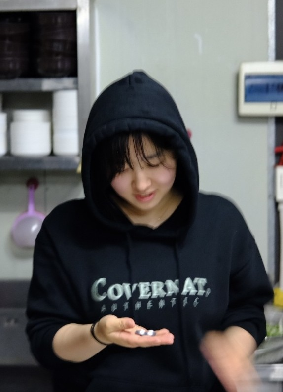

Technical Artist / Game Designer / QA
Develops gameplay systems using C++ with a focus on clear structure, object-oriented design, and problem-solving. Connects game logic, player interaction, and engine-based programming.
Shapes the overall mood, atmosphere, and visual identity of game projects. Maintains consistency across characters, environments, UI elements, and visual feedback.
Designs gameplay systems that are clear, engaging, and easy for players to understand. Focuses on player flow, meaningful choices, feedback, and overall game experience.
Student Game Programmer JISU SON
I am a game developer with strengths in C++ Development, Visual Direction, and Gameplay Design. Through multiple team projects, I have worked across programming, art direction, and design, building gameplay systems while also shaping the mood, visual identity, and player experience of each game.
I focus on creating games that are clear, consistent, and player-friendly. My experience as an Art Lead, Design Lead, and QA has helped me understand how visuals, mechanics, UI, and feedback work together to improve the overall quality of a game. I value communication, problem-solving, and feedback, and I aim to keep growing as a developer who can contribute both technically and creatively.

A selection of my range of projects
ART LEAD, RAILCHU Sep 2024 - Dec 2024 Led the visual direction for a 2D train-themed room-escape puzzle game. Created environmental art, puzzle props, hint visuals, and interactive assets across four rooms. Designed visual feedback elements to improve puzzle clarity, player guidance, and immersion.
DESIGN LEAD, OMG Corp. Mar 2025 - Jun 2025 Led the core concept and gameplay structure for a point-and-click tycoon survival game. Designed the daily task flow, random seat system, workload management, and minigame progression. Maintained consistency between the office survival theme, mechanics, and visual direction.
ART LEAD, QA, NO.99 Sep 2025 - Present Led the overall visual design, atmosphere, charcter direction, UI visuals, and art concsitency for a side-scrolling action-exploration game. Conducted QA testing to improve player clarity, usability, and gameplay flow. Applied feedback to refine design decisions and polish the game from player's perspective.
Bachelor of Science in Computer Science in Real-Time Interactive Simulation 2024 - Present Daegu, Korea & Redmond, WA, USA Relevant Courses: Computer Graphics, Data Structure, Game Projects